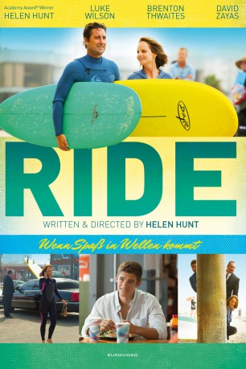

#6446 Ride - Wenn Spaß in Wellen kommt
Alternativ: Ride
 
 IMDB-Wertung: 5.7 / 10
IMDB-Wertung: 5.7 / 10  Metascore: 0
Metascore: 0 
Eine Mutter reist ihrem Sohn quer durch Kalifornien hinterher, nachdem er sich entschieden hat die Schule abzubrechen und Surfer zu werden: Als erfolgreiche Lektorin ist es Jackie Durning (Helen Hunt) gewohnt, die Zügel fest in der Hand zu haben. Angelo (Brenton Thwaites), der mit seiner alleinerziehenden Mutter in New York lebt, bekommt ihren Kontrollwahn tagtäglich zu spüren. Der Achtzehnjährige möchte Schriftsteller werden und ist bereits bei einer Hochschule für Literatur angemeldet. Nach einem Besuch bei seinem Vater, der mit seiner neuen Familie ein unbeschwertes Leben am Meer in Los Angeles lebt, und weil er New York mit der dominanten Jackie satt hat, lässt Angelo alles hinter sich und geht zu seinem Dad. Endlich fühlt er sich frei und kann seiner Leidenschaft, dem Wellenreiten, nachgehen. Als Jackie die Distanz nicht mehr erträgt, folgt sie ihrem Spross nach Santa Monica.
Jahr: 2014
Dauer: 92 Minuten
FSK: 0
Land: USA Studio: Screen Media FilmsTonspuren: DD5.1 - ,
Untertitel:
Auflösung: 1080p (1920x808) Größe: 6307 MB
Genre: Drama, Komödie
Regisseur:  Helen Hunt
Helen Hunt
Drehbuch: Helen Hunt
Soundtrack:
Darsteller:
 Helen Hunt als Jackie
Helen Hunt als Jackie Brenton Thwaites als Angelo
Brenton Thwaites als Angelo- Julie Dretzin als Joanna
- Jay Russell als Maitre 'D
 Willie C. Carpenter als Doorman
Willie C. Carpenter als Doorman Richard Kind als Boss
Richard Kind als Boss- Jay Huguley als Co-Worker
 Robert Knepper als Peter
Robert Knepper als Peter Leonor Varela als Danielle
Leonor Varela als Danielle- Evan Williams als Brad
- Jacob McCafferty als Surfer
- Keith Ewell als Flight Attendant
 David Zayas als Ramon
David Zayas als Ramon- Matthew Downs als Bike Cop
- John Mel als Surf Rat Kid
 Luke Wilson als Ian
Luke Wilson als Ian Callum Keith Rennie als Tim
Callum Keith Rennie als Tim- Elizabeth Stillwell als Blanche
- Tyler Parks als Newsom
- Danielle Lauder als Karen
- Jessica Jade Andres als Gorgeous Girl
- Blake Cooper Griffin als Waiter
 Mike White als Roger
Mike White als Roger- Renee Faia als Reporter , uncredited
- Kurt Leitner als Hotel Guest , uncredited
 Sandra Rosko als Beach Girl , uncredited
Sandra Rosko als Beach Girl , uncredited- Leah Shaw als Waitress , uncredited
- Jera Sky als (uncredited
- Jordan Lane Price als Marywald
- Makena Lei Carnahan als Young Girl on Plane
- Amberly Rose Echeverry als Makena Lei
- Chance Eldridge als Lex
- Matt Conrad als Surf Instructor , uncredited
- Lizze Gordon als Ashley , uncredited
- Richard Raymond Harry Herbeck als Coffee Shop Hipster , uncredited
Datei: X:\2014(N-Z)\Ride - Wenn Spaß in Wellen kommt (2014, FSK0, 1920x808).mkv seit 22.06.2017
Festplatte: HD 2013(I-Z)-2014(A-Z)
 Es gibt insgesamt 163 Filme in der Gruppe '2014(N-Z)'
Es gibt insgesamt 163 Filme in der Gruppe '2014(N-Z)'